Expand all Collapse all You do not need to attack to get Hakbal's team explore. Go to beginning of combat even when attacking is unsafe. Choose the explore order, and remember that keeping the same nonland card on top can give every Merfolk a counter; putting it into the graveyard instead digs toward a different card. Explore with a purpose 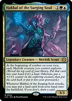Hakbal of the Surging SoulEach Merfolk you control explores as one beginning-of-combat ability resolves, including Hakbal and summoning-sick Merfolk. No player gets priority between those explores. His separate attack trigger either puts a land from hand onto the battlefield or draws a card if you decline. 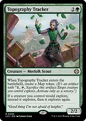+Topography Tracker + Hakbal of the Surging SoulEach prescribed explore happens twice. A nonland left on top can give each Merfolk two counters before other counter modifiers; revealing a land puts it into hand and lets the next explore see the next card. 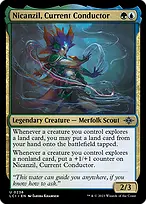Nicanzil, Current ConductorLands explored give you optional tapped land drops, while nonlands explored grow Nicanzil. These triggers wait until Hakbal's entire team-explore ability finishes, so you cannot resolve Nicanzil's ramp midway through the team. 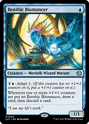Benthic BiomancerCounters from exploring trigger a draw-and-discard afterward. This helps turn a nonland deliberately left on top into a card in hand. Its trigger is once per counter-placement event, not once for every individual counter in that event. +Roaming Throne + Hakbal of the Surging SoulChoose Merfolk. Throne becomes a Merfolk and doubles Hakbal's beginning-of-combat and attack triggers. With Topography Tracker too, each Merfolk normally explores four times across the two team-explore resolutions. Roaming ThroneAlso doubles triggered abilities on your other Merfolk creatures, such as Nicanzil, Attuma and Deeproot Elite. It does not double Topography Tracker's replacement effect or abilities on noncreature enchantments such as Kindred Discovery. 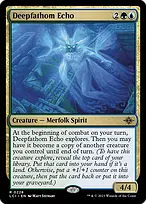+Deepfathom Echo + Topography TrackerPut Echo's beginning-of-combat trigger above Hakbal's so it resolves first. After Echo explores, copy Tracker to increase the upcoming team explores. Copying a legendary creature creates a legend-rule problem, and becoming a copy does not trigger an enters ability. 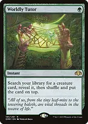Worldly TutorA Game Changer that can place a useful creature on top before combat. Leave that nonland there through explores to grow the team, then draw it with an available draw effect. Tutor does not itself put the creature into your hand. Build a school before growing it 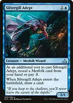+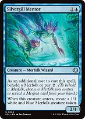Silvergill Adept + Silvergill MentorAdept replaces itself with a card; Mentor creates a second Merfolk body. Reveal a Merfolk for Adept's additional cost, or behold one for Mentor, to get the intended two-mana rate. 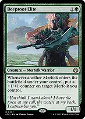Deeproot EliteEach other Merfolk entering puts a counter on a chosen Merfolk. Put counters on creatures that need to qualify for Herald of Secret Streams, Inspiring Call or protection from Ripples of Potential, rather than automatically making the biggest creature bigger. 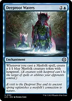+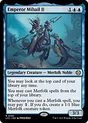Deeproot Waters + Emperor Mihail IIWaters supplies a hexproof Merfolk token for each Merfolk spell; Emperor supplies another token if you pay one. Both care about casting, so a token entering does not itself create another round of tokens. 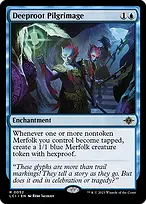+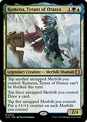Deeproot Pilgrimage + Kumena, Tyrant of OrazcaKumena can tap individual other nontoken Merfolk one at a time for repeated instances of making him unblockable. Each separate tap event can make a token. Tapping three Merfolk together for Kumena's draw creates only one Pilgrimage trigger if at least one was nontoken; tapping only tokens creates none. 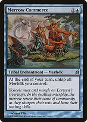+Merrow Commerce + Kumena, Tyrant of OrazcaCommerce untaps all Merfolk at your end step, leaving blockers or another use of Kumena's draw/counter abilities. Kumena's costs do not use a tap symbol, so fresh Merfolk can help pay them immediately. 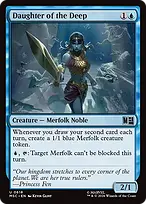Daughter of the DeepA real second draw each turn makes a Merfolk token, and her activated ability can make Hakbal or a large attacker unblockable. Explore putting a land into hand is not drawing a card and does not trigger her. 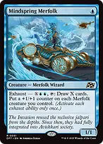Mindspring MerfolkA one-mana body that grows through explore before its later exhaust activation converts spare mana into cards and a counter on each Merfolk. That exhaust ability can only be used once while it remains the same battlefield object. 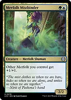+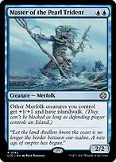Merfolk Mistbinder + Master of the Pearl TridentCheap anthems make every small body relevant. Master also grants islandwalk to your other Merfolk, giving combat access against opponents who control an Island. 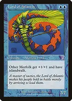Lord of AtlantisAnother islandwalk anthem, but this one also benefits opponents' other Merfolk. Neither islandwalk lord gives its own ability to itself, though they can grant it to one another. Spend your mana on decisions rather than waiting ++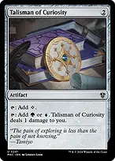Sol Ring + Arcane Signet + Talisman of CuriosityEfficient acceleration makes it easier to cast Hakbal and still develop a Merfolk or hold up interaction. Colored sources still matter: Sol Ring cannot pay the blue and green in his cost. +Nature's Lore + Three VisitsFetch a Forest-typed dual such as Tropical Island or Breeding Pool to fix both colors. Breeding Pool still requires its life payment to enter untapped; Hedge Maze always enters tapped. +Nicanzil, Current Conductor + ExplorationExplore can put several lands into hand; Nicanzil's triggers and Exploration's additional land play let you use them. Exploration supplies an extra normal land play during your turn, not permission to play lands at instant speed. 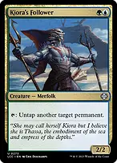+Kiora's Follower + Three Tree CityName Merfolk for the City's scaling mana ability. Once the creature count is high, Follower can untap City for a second activation, though each activation still costs two mana. Early, simply untap a normal land or a useful blocker. 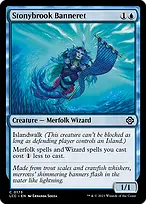+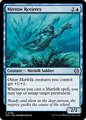Stonybrook Banneret + Merrow ReejereyBanneret discounts the generic part of Merfolk and Wizard spells, just once even if the spell is both. Reejerey can untap a land when you cast a Merfolk spell or tap an opposing blocker before combat. The Great HengeExplore counters and a growing Nicanzil reduce its generic cost, down to a minimum of two green. It then adds mana, life, counters and draws from nontoken creature entries, keeping the deck productive without Hakbal. Keep cards flowing without the commander +Emperor Mihail II + RealmwalkerEmperor casts Merfolk spells from the top; Realmwalker naming Merfolk casts Merfolk creature spells from the top. Clear an unwanted top card with explore when possible, or use a fetchland to shuffle before continuing the chain. 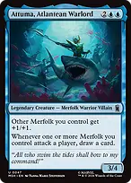Attuma, Atlantean WarlordAdds an anthem and draws for each player attacked by one or more of your Merfolk. Splitting safe attackers across three opponents can draw three cards without needing those attackers to connect. 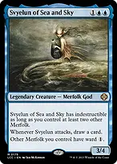Svyelun of Sea and SkyAttacking draws a card, two other Merfolk grant her indestructible, and ward protects your other Merfolk from cheap targeting. She does not give herself ward. 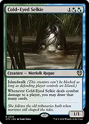+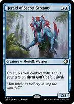Cold-Eyed Selkie + Herald of Secret StreamsCounters increase both Selkie's damage and the number of cards she can draw. Herald makes the counter-bearing Selkie unblockable even against an opponent without Islands. 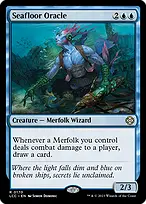+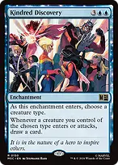Seafloor Oracle + Kindred DiscoveryOracle draws when Merfolk deal combat damage to players. Discovery naming Merfolk draws when they enter or attack, so it works even through blockers. Discovery's draws are mandatory; keep track of your remaining library on a very large board. 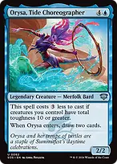Orysa, Tide ChoreographerOnce your creatures have total toughness ten, she costs two mana and draws two cards on entry. Explore makes that threshold realistic, but she remains a five-mana spell in a hand with no developed board. Tatyova, Benthic DruidTurns the extra lands put onto the battlefield by Nicanzil or Hakbal into cards and life. Simply putting a revealed land into your hand does not trigger her. Turn your counters into a finish +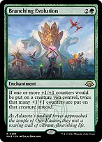+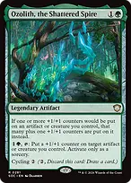Hardened Scales + Branching Evolution + Ozolith, the Shattered SpireThese change counter placement, not the number of explore events. When adding one counter with all three present, apply the two plus-one effects first and the doubler last to add six. You choose the applicable replacement-effect order on your creature. +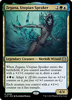Herald of Secret Streams + Zegana, Utopian SpeakerHerald makes creatures with +1/+1 counters unblockable; Zegana gives such creatures trample. Both work without Hakbal once counters are established, so preserve one when preparing a decisive attack. +The Ozolith + Herald of Secret StreamsThe artifact saves copies of counters from creatures that leave, then can move all of its counters onto one creature at beginning of combat. That can create an unblockable finisher or a commander-damage threat. It does not preserve the creatures themselves. 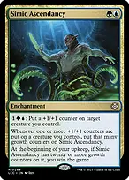Simic AscendancyTracks how many +1/+1 counters actually get placed on your creatures. At twenty growth counters it threatens a win at the beginning of your next upkeep, and it needs twenty both when the ability would trigger and when it resolves. Reaching twenty during combat does not win immediately. +Kumena, Tyrant of Orazca + Simic AscendancyTapping five Merfolk places a counter on every Merfolk, adding many growth counters at once. Tokens that just entered can pay the cost; keep enough resources available to protect Ascendancy until your upkeep. 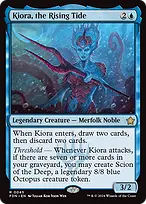Kiora, the Rising TideHer entry loots two cards and helps reach seven cards in the graveyard. Attacking with threshold makes a legendary 8/8 Octopus, adding a large threat without another expensive card. The token is not a Merfolk, and the legend rule prevents keeping multiple copies with the same name. 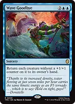+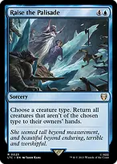Wave Goodbye + Raise the PalisadeWave bounces creatures without +1/+1 counters; Palisade naming Merfolk bounces non-Merfolk. Choose based on the opposing board. Wave can bounce your new uncountered creatures, and Palisade bounces Kiora's Octopus. Cyclonic RiftThe second Game Changer clears opponents' nonland boards at overload cost. Use the opening to finish or stabilize; its purpose is to convert the army into a decisive combat rather than repeatedly reset the game. The main finish is a large evasive Merfolk attack, with Simic Ascendancy as a telegraphed alternative. There are no intentional infinite combos, extra-turn chains or mass land denial effects. Expect to build resources before a decisive turn; roughly turns seven to nine is an estimate, not a playtest result. Keep interaction available 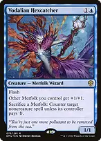Vodalian HexcatcherFlash in an anthem that can sacrifice Merfolk to tax a noncreature spell. Opponents can pay the extra mana, so count their available resources before sacrificing several creatures. Tishana's TidebinderCounter a dangerous activated or triggered ability. If its source is an artifact, creature or planeswalker, that source loses its abilities while Tidebinder stays. She cannot counter spells or mana abilities, and removing her restores the affected permanent's abilities. ++Fierce Guardianship + Mana Drain + Swan SongGuardianship is the third Game Changer and protects a developed position without spending mana while Hakbal is present. It only counters noncreature spells. Drain covers creature spells too, while Swan Song is a cheap answer to an instant, sorcery or enchantment spell. ++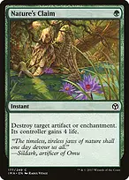Beast Within + Pongify + Nature's ClaimKeep cheap answers for permanents that stop your engine or threaten an immediate win. Pongify destroys rather than exiles, so it cannot handle an indestructible creature; Beast Within gives a token and Claim gives life as their tradeoffs. 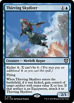Thieving SkydiverKick it to take a useful artifact, often mana or Equipment, while adding another exploring Merfolk. The stolen artifact stays under your control if Skydiver leaves, and a creature-token copy made without casting and kicking it would not steal anything. +Boseiju, Who Endures + Otawara, Soaring CityLand slots double as interaction. Their channel abilities are not spells, and legends on your board reduce the activation cost. Keep them as lands when missing a land drop would otherwise stall development. 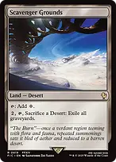Scavenger GroundsSacrifice itself as the Desert to exile every graveyard when needed. This also removes your own retrace targets and Kiora's threshold fuel, so use it when stopping an opposing graveyard line outweighs that cost. Survive and rebuild +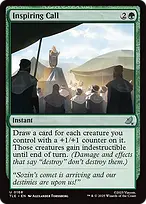Heroic Intervention + Inspiring CallIntervention protects your permanents from targeting and destruction; Call draws and grants indestructible only to creatures already carrying +1/+1 counters. Neither answers an exile sweeper or lethal toughness reduction. +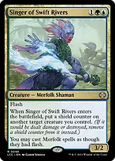Ripples of Potential + Singer of Swift RiversSinger can give another creature a shield counter, which also qualifies it for Ripples. Proliferate counters already present, then phase out the permanents that actually received a counter this way. Ripples cannot save a counterless permanent and phasing out does not trigger The Ozolith. 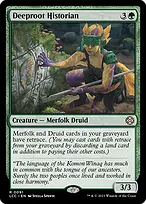Deeproot HistorianDiscard surplus lands and pay the normal spell costs to recast Merfolk and Druids from your graveyard. This includes the kindred Merrow Commerce. Historian must be on the battlefield to grant retrace; it does not recover itself from the graveyard. 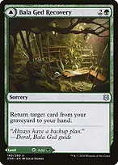+Bala Ged Recovery // Bala Ged Sanctuary + The OzolithRecovery returns a crucial card to hand, while Ozolith preserves counter investment when creatures leave. Recovery's land face can prevent a missed land drop, but in your library its front face is a nonland card for explore. 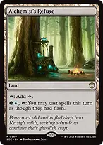+Alchemist's Refuge + Singer of Swift RiversFlash lets you deploy creatures late, preserve mana for answers and rebuild before your next combat. Refuge requires paying its activation plus the spell's normal costs; Singer supplies flash only for Merfolk spells. Find the piece that changes the next turn →Worldly Tutor → Topography TrackerFind Tracker early when you already have several Merfolk and need to increase every upcoming explore. Arrange to draw it and cast it before the combat where you need its replacement effect. →Worldly Tutor → Herald of Secret StreamsWith a large counter-bearing board, find evasion to make the next attack decisive rather than adding another value engine. →Worldly Tutor → Deeproot HistorianAfter a wipe, fetch the creature that turns lands in hand into recovered Merfolk, provided your graveyard still contains useful targets. →Worldly Tutor → Tishana's TidebinderWith a draw effect and enough mana available, this finds an instant-speed answer to an ability. Tutor alone is not an immediate counterspell because its target stays on top until you draw it. Opening hands and comfortable paper sequencing Keep about three lands, at least one early Merfolk, and ramp or another cheap play. A turn-two ramp spell into turn-three Hakbal is excellent if you already have a body; a hand of counter doublers and no Merfolk is much weaker. Hakbal generates explores even on the turn he enters and even if you declare no attackers. Develop creatures before combat, resolve explores, then decide which attacks are actually profitable. Do not expose him to a losing attack just to get the land-or-draw trigger. For paper play, announce the Merfolk explore order and keep dice beside creatures. If you leave a known nonland on top, state that you are retaining it for subsequent explores and add the appropriate counters in order. Queue Nicanzil and Biomancer triggers until the entire team explore finishes; with Roaming Throne, players can act between the two separate Hakbal resolutions. Put explore on top of The Ozolith's beginning-of-combat trigger when you want to see the resulting board before its counters move, but remember the Ozolith target is chosen when its trigger goes onto the stack. Deepfathom Echo should resolve before the team explore when copying Topography Tracker. Mosswort Bridge can hide a payoff for a later turn once your creatures reach total power ten. A large army also discounts Orysa and The Great Henge, so use those savings to retain interaction instead of casting every card in hand. The mana base favors duals and fetchable colored sources. Five basics leave ordinary fetch and opposing replacement-effect targets available. Cavern of Souls and Secluded Courtyard's colored mana has creature-type restrictions: do not count it as blue mana for a counterspell.